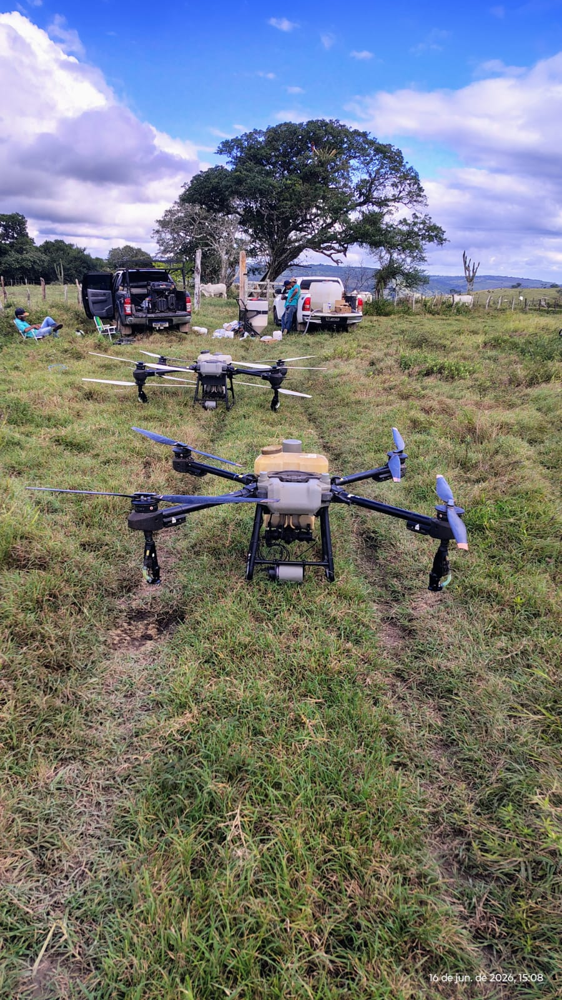
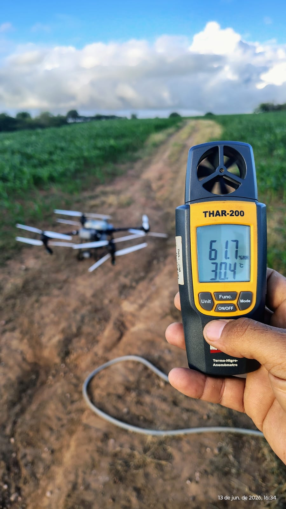

Drones Agrícolas em Operação
Equipamentos preparados para operações em lavouras e áreas de difícil acesso, oferecendo agilidade, uniformidade na pulverização e apoio moderno às decisões da fazenda.
O futuro do agronegócio já está no campo. E a RT AGRO está conectada à evolução da agricultura por meio da tecnologia de drones agrícolas. Mais tecnologia no campo. Mais possibilidades para o produtor rural.
Pulverização com Drones: Aplicação aérea direcionada para modernizar as operações da fazenda com agilidade e precisão no Norte e Nordeste.

Produtores rurais, proprietários de fazendas e gestores do agronegócio das regiões Norte e Nordeste: conheçam novas possibilidades para modernizar as operações da sua propriedade.
A RT AGRO nasceu com o propósito de levar pulverização eficiente e tecnologia de aplicação diretamente para o dia a dia das lavouras e propriedades rurais, unindo precisão operacional e compromisso com o resultado no campo.
Sob a liderança de Rodrigo Teixeira, a operação já esteve em campo em frentes como aplicações próximas a Cuiabá — incluindo controle de plantas herbáceas e cigarrinha, com parceria com a Corteva por meio de Aderiano Nunes — ampliando sua experiência prática e técnica para atender produtores que buscam modernidade e eficiência.
Operação de aplicação aérea com drone em campo — RT AGRO.
Combinamos drones agrícolas dedicados com aferição ambiental em campo para entregar aplicações assertivas e alto rendimento operacional.

Equipamentos preparados para operações em lavouras e áreas de difícil acesso, oferecendo agilidade, uniformidade na pulverização e apoio moderno às decisões da fazenda.

Monitoramento de condições como umidade relativa e temperatura com medidor digital em campo (ex.: leitura de 61,7% RH e 30,4 °C) para maior critério técnico durante a aplicação.
A RT AGRO quer fazer parte dessa evolução! Acompanhe as operações no campo e fale diretamente com a equipe pelo Instagram.